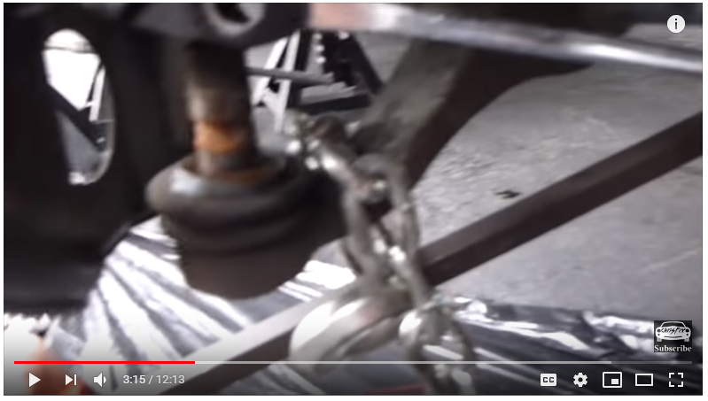
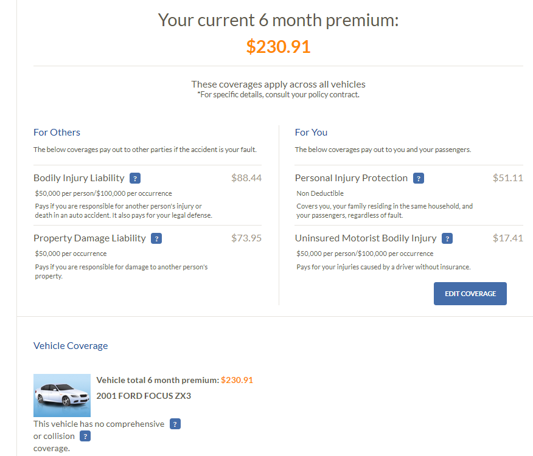
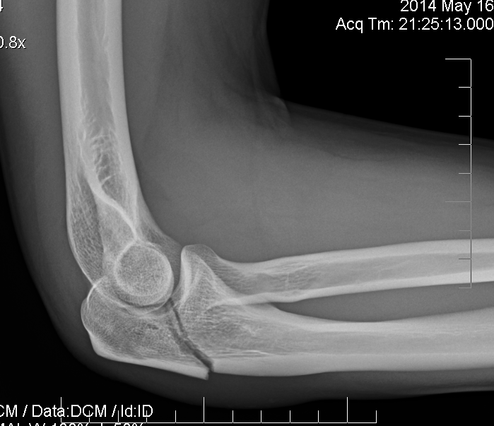
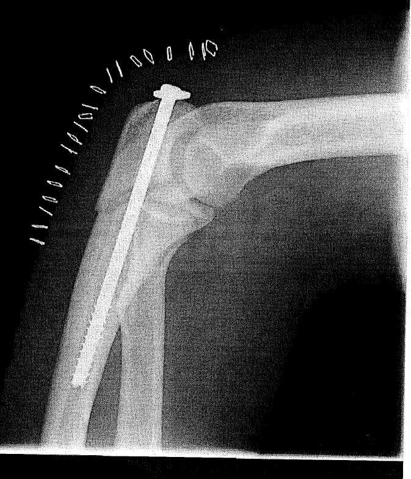
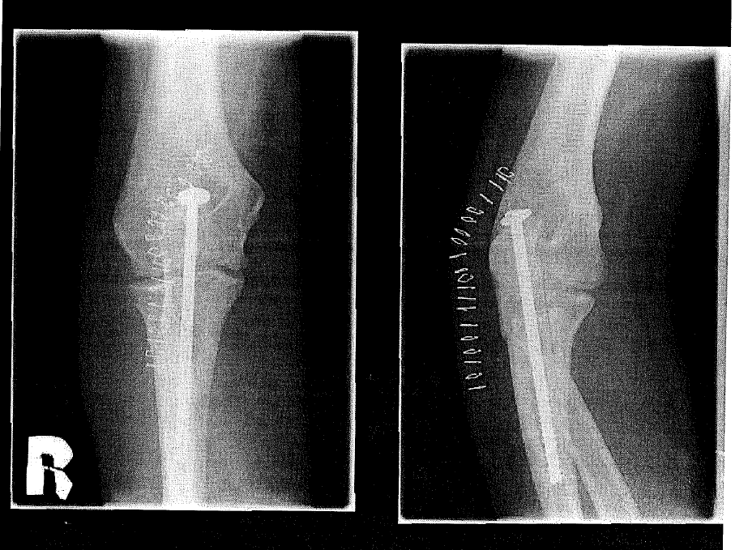

Table of Contents
Car Hacking
Will brought it up. http://opengarages.org/handbook/ebook/ Looks like a great book for security of cars.
To Replace or Not
Tradeoff between cost of repairs and presumably less likelihood of repairs.
Tutorials
Schrodinger's Box, Scanner Danner. There a lot of other that seem pretty good too!
LinkedIn of Matt: https://www.linkedin.com/in/matt-bernstein-03258810/. Bam…
Safety
Do I really need a giant SUV to stay safe on the road? What types of crashes are there, and would driving a big car have helped?
Defensive Driving
I think the primary way to stay safe is probably defensive driving. NFSA series looks great. YouTube Link! https://www.youtube.com/watch?v=fUndGF6QiQ4
- Stay off the road when drunk drivers are out. 11pm to 5am.
- <Going to the next intersection> is a slight inconvenience, but less than having your car sitting in a smash repair shop!
Safe driving school (skid car, $350 for 3 hours): https://www.prodrive.net/car-control-and-defensive-driving-course
Crash Test Ratings
Head-on collisions aren't comparable between car sizes (big cars win), but other collision types (angle, sideswipe) are comparable.
FARS Data
However, how many of the crashes are from a drunk driver?
Very similar for each year. FIRST reporting system (easier query): https://cdan.dot.gov/query
For 2017
| Type | Fatal Crashes | Non-Fatal Crashes |
|---|---|---|
| 1-car collision | 20975 | 563257 |
| Rear-End | 2473 | 614959 |
| Head-On | 3494 | 78831 |
| Angle | 6437 | 496422 |
| Sideswipe | 970 | 120837 |
| Other | 141 | 14228 |
| Unknown | 70 | 0 |
Next Car?
- Leather
- Is hatchback necessary?
- Wagon is kinda nice, but kinda lame too? At least prius sized, 4 door
No
- Air suspension
- Salvage title? Dealer?
Don't Forget
- Try out seat height of various cars at used car dealership
- Toyota Scion xA and for sure Nissan Versa didn't fit well. What about Mazda 3?
- CarComplaints.org
Results
Don't fit for various reasons: Prius N (don't fit in back), N-1 (seat isn't adjustable), Civic N, Accord N & N-1. Corolla (back seat not tall enough), Avalon (feels like a cockpit).
Fits: Civic N-1, C-Max (George Magher at Ford place). Focus (had issues with transmissions that were supposedly fixed in 2016+?), not sure about Fiesta.
- C-Max battery should last. Also might need to reset it with ForScan. https://www.fordfusionforum.com/topic/19361-my-instructions-on-restoring-the-hybrid-ev-function-on-the-ford-fusion-hybrid-approaching-the-89-years-mark/
To Try: Versa & Sentra (reliability is ?). Matrix.
What car would be fun to drive? They all look the same on the inside and they go from point A to B…
Honda salesman is David Stephens. Ford guy's name is…I forget.
Sounds
| Sound | Cause |
|---|---|
| Higher pitched whining at all times while engine running | Torque converter (transmission) |
Hybrid battery testing
- Check diff between min and max voltage. Needs to be <1.2V
Trunk list
For when you're out and about and need to fix something
- Bottle jack. Faster than scissor that you lost the handle for.
- Socket set
- Long handled
- Knee pad (dollar tree if not Harbor Freight)
- Adjustable wrenches
- Hex/star hand-held wrench kit
- Philips and flathead screwdrivers.
- spare tire, while it takes weight in the city, it's too annoying for me to remember to put it back in before a trip to the gorge.
Also buy more antifreeze and xl gloves for home in same trip.
Weird Sound Ford Axle or Bearing
Pretty sure bearing now. Axles don't spin on themselves. Bearings do. https://www.brakeandfrontend.com/wheel-bearing-noise-diagnostics/
But need to make sure bearing is properly torqued, etc.
YouTube Link! https://www.youtube.com/watch?v=3THHZrpKKAU
- 2:17
Selling a Car
Follow these steps. Get copies of drivers license, etc. https://www.quora.com/What-can-I-do-if-the-buyer-of-my-car-doesnt-register
I did most of the stuff, but ergh.
Suspension
Pulling down control arms. https://youtu.be/BPs-QALECqs?t=195. (pull down using a chain hooked around the arm and a crowbar/long metal thing fulcrum'd against the frame in the back). 
{kind=link}
Repair Places
Domes recommended Pace-Way in Hillsboro for advanced issues.
Tire rollers? https://pitstopusa.com/i-5084746-joes-tire-roller.html
Tires
Discount Tire, I don't think I need Certificate For Repair, Refund or Replacement. Ask for what happens without it and if ok, ask for a refund of all 4 tires if possible.
Wear in aggressive cornering
I happen to like taking turns aggressively in safe conditions. It's pretty fun when you sit in a cube all day and there are no other roller coasters around you!
However, tire dealers have insisted that tires have some sort of mileage warranty so they have some way to compare and contrast. If you do a comparison of the warranties vs the UTQG treadwear rating, you'll see a loose correlation. But treadwear warranties also do not work in a straightforward manner. That’s because most tire wear occurs in the cornering mode. In order to generate the force necessary to move 2 tons of vehicle in a different direction, the tires have to produce a slip angle - the difference between the direction the tire is pointed and the direction it is actually going. And that scrubs off rubber - the more severe the cornering, the more rubber is scrubbed off. When doing severe handling maneuvers, tires last 10’s of miles.
On the other hand, a tire that goes straight ahead, is close to no wear at all! I’ve conducted tests where the range of mileage received was a 10 fold difference - 10K to 100K - and the differences were the road surface (new abrasive concrete vs well worn asphalt) and the service (local delivery vs hauls between cities.)
Force
Tire has to oppose centripetal force as well as normal weight. What doesn't make sense is if, on a flat surface, rolling resistance slightly increases as the <constant> speed increases (no acceleration)…why? No more tire touches the ground.
Temperature
Not as significant as racing
Having someone fix your car
Try to figure out what parts you need ahead of time. Then buy them for 1/2 the price at RockAuto and have them do the labor. Otherwise it's the same day double price + time to get it parts. More expensive…
Spark Plugs
To change them, spray carb cleaner down in hole first, then rock the plug back and forth to break any seal and let the carb cleaner penetrate any carbon buildup. Ehh, just watch this: https://youtu.be/hAvmYeQ3TXo?t=35m1s
Oxygen Sensors
Need to be warm (700F) in order to operate correctly, plus a cold engine runs rich to <heat up the engine more quickly??>
2001 Ford Focus Automatic ZX3
Pluses
Replaced things on time / when needed. Don't hear any funny noises.
Minuses
There are minuses, but they haven't affected me enough or I found a workaround. I provide all that I remember so it saves both of us time and energy.
- Sun blocker missing on driver's side. Passenger's side is on but loose. However a small bungee cord should hold it up fine.
- No AC
- Windows squeak when rolled down on some days
- Driver side flip forward mechanism handle broke. However, I've found that using the nearby seatbelt hook is an excellent replacement.
- No ceiling liner
Other less noticeable:
- On idle lights dim and bounce around brightness-wise. Probably from generator friction.
- Small leak in back hatch area
- No ceiling … thing.
- Removed hard trunk cover. Usually got in the way + no good place to store it.
- Back hatch closes, but needs an occasional squirt of lubricant in the latch.
- Apparently someone “keyed” the right door at one time. Whatever :)
- Left driver side wheel finish is halfway gone. Doesn't seem to be rusting, so there looks to be no issue.
- Rear underside of car is quite rusty looking, but I don't think it's gone anywhere in this milder Oregon weather.
Costs
Parents still think people will think it's an unreliable/undesirable car.
| When | What |
|---|---|
| Spring 2020 | Leak in radiator pipe/hose, fixed with Stop Leak. However pipe split on trip to beach, thankfully at the beach. Got replacement part and more coolant/stop leak just in case. $50 |
| Apr 2019 | Bolt on outer tie rod wasn't tightened properly by me (doh), so came off while driving. No accident! I couldn't easily find the right bolt, so ended up buying new tie rod end, but couldn't get it off (too rusty). Cut it off, installed new inner tie rod and had Paceway do the other side and alignment + tire rotation. $50 / hour of labor is cheap in my book. $300 + 5 hours time |
| Apr 2019 | $50 for ball bearing (fixed the sound!) and $50 for repair, plus time |
| Dec 2018 | Changed oil (what mileage?!), replaced tires $300. Replaced left driver side axle $40 on saturday (6 hours), didn't fix sound. |
| Summer 2018 | $1k for Front lower control arms and ball joints and timing belt |
| Summer 2017 | Bought car for $1.6K |
Occasionally won't start (dashes)
Check the ECU connection to the battery (little orange wire, https://www.youtube.com/watch?v=WzmZiUqnaJY) or the nearby ground to the frame.
- Also can check your work by measuring the resistance between various sections. Frame to bolt, bolt to wire, wire to wire/battery connector, wire/battery connector to battery post. In my case, there was still .6 ohms between the wire and wire/battery connector on the ground side, and not on the positive side!
- Might want to try … a quick soldering? Not sure, it's a ????????? connection
Clean w/ wire brush and/or with water/baking soda. Then get dry and put a little dielectric grease / vaseline? in between connection not to increase connection but to protect from ozone corrosion
Poor electrical on idle
Check the ground connections using multimeter (I feel like it's not accurate though under load?). Alternatively just connect each using a jumper cable.
- Engine block cable to ground
- Battery cable to ground
- Positive of alternator to positive of battery
AKA the “big 3”: http://www.focushacks.com/mod/Improving_your_chassis_ground_%28Big_3%29. but they just upgrade the cable awg.
http://www.focusfanatics.com/forum/9765906-post23.html
- After doing all the above, his alternator was putting out 15V instead of the correct 14.5V. Might be good to check too.
Truck guy had a missing ground.
Possible recall. https://repairpal.com/recall/02V288000
We'll try it out for now. Ramp on manual over time?
- Poor idle until warmed up. IAC (idle air control) valve seems to be moving though to keep the engine from dying.
- Need to replace timing belt, probably do coolant flush and hose replacement too.
- I'm going to do the anti-roll bar link suspension things on my own
- Decide if it's worth putting money into the car or just go with Honda/Toyota. I don't drive it hardly at all, so it's not a daily driver. <3K miles a year.
- Front tires wear on inside, both sides. Weird…alignment was done that badly?
- Rear brake squeak.
- Encourage him to look at other stuff along the way and asking me to buy different parts if needed. I am riding my bike to work, so I'm not blocked by leaving it there a few days. I want it done right and completely.

- What else did you buy at Rockauto?
- Ask them about condensation quiz problem, for fun?
Brake width
- Shoes, .039 inches (1/25 of an inch)
- Pads, Haynes says 1/16 of an inch
Remaining
Can borrow 29mm and 21mm sockets from auto parts stores for brake squeak and transmission mount.
Also need 1 dust cover for wheel bearing. Not sure on size, but it's a bendable metal.
Poor idle
https://youtu.be/70vSN8l8VTw?t=5m58s. Schrodinger's box narrows it down to a really lean combined fuel trim, which means a vacuum leak. He sprays propane / fuel around to find where the leak is, because the engine will start running better instantaneously.
Dashes on odometer, no start
It's sporadic. Reinserting the fuel pump relay “fixed” it, but it seems sporadically helpful from comments online. Might need to look for water intrusion. https://www.youtube.com/watch?v=RGPW64RGpmU&lc=UgzWpWaEZ2QI7xSRtzN4AaABAg
One guy says to check power and ground on ignition harness.
- Test with megger, which basically sees what resistance is with load running? Better for determining bad wires, etc. http://forums.focaljet.com/showthread.php/529103-Dirty-Ground(s)-vs-Fuel-Pump-Fuel-Pump-Driver-Module
Old
Need to get engine mount and maybe new steering knuckle gasket thing.
- Air filter box needs replacing, or clamping. Gets pretty warm in the area, so strap wouldn't work.
- Oregon Auto Wrecking and Bud's Auto Wrecking have the parts. Pick n' pull probably too, but need to bring your own screwdrivers and stuff.
- While replacing engine mount, inspect timing belt and see if it needs replacing.
- Yep, it's pretty cracked.
- If you do the job, should I replace the top gasket too? $15.
- Also, the blinking of lights on idle. Need to check resistance of various parts, maybe unplug the alternator when the car is running to test…ripple?
- Voltage on battery is good, but positive to ground is pretty bad. Maybe bad ground somewhere or alternator is going bad
- Voltage on battery after running headlights for a bit and then cranking the engine should not dip below 11V…I think. https://www.youtube.com/watch?v=COJr7OB23Hw Also alternator tips from ChrisFix: https://www.youtube.com/watch?v=LGB6ZEjGm7Q
- Lots of corrosion. :( We cleaned out the throttle and air intake, screw things were rusted out or gone. Need to get part from junkyard or use binder clips temporarily?
- Exhaust is leaking. Need to investigate how bad a problem that is. Exhaust manifold pressure.
- He would recommend changing spark plugs. My tendency is to use it until broken and then replace. Might want to inspect them though.
- Pull on brake lines (they looked corroded) to make sure that they don't break on you in hard deceleration.
- Engine head gasket or something was rebuilt. Parts looked newer.
- Jumping on car gave a springy action and not a good piston feel. Also, he was able to generate a squeak from “divorcing” the parts from each other.
- Undercarriage cover at front of car missing, tighten front chrome bolt
- Coolant flush
- Set of smaller hex wrench heads for last bit of timing belt cover removal.
- Do I need water pump along with timing belt? Do I need new timing belt?
- Transmission mount is clunky too. Probably want to replace those as well.
- Brake line (or power steering?) is leaking, can probably just refill it
- Driveshaft is leaking
- Replace mounting bracket that rusted through
- Cleaned out rear drum brakes
- Drive backwards a few and brake hard to encourage self adjustment of drums
- Probably need to put anti sieze on contact points now or file off front of drum pad at 45 angle. Test by putting drum back on (not wheel) and spinning the drum with drill and having someone apply brakes.
Clear the trouble codes and see if they show up again. Clear memory for Siemens remote thing by drivers side right side under dash by unplugging its power.
If a timing belt isn't so bad, it might be worth getting that service manual…
Think about taking to independent shop, Aloha Auto Center?
Jay says buy parts that have 1 year or more warranty. Not necessarily OEM but something you can get a return on
Clean idle air control valve. Test EGR valve?
- IAC valve looks operational on FORScan because I hear slight engine rpm changes when IAC signal changes on screen.
Also can use brake cleaner pretty interchangeably with carb cleaner. https://mechanics.stackexchange.com/questions/19062/brake-cleaner-vs-carb-cleaner-vs-throttle-body-cleaner But watch out for paint…
Cleaning headlights with sandpaper and water and Rustoleum 2X clear coat gloss, states non-yellowing and UV resistant on the can. Ala ChrisFix: https://www.youtube.com/watch?v=UEJbKLZ7RmM
Also, cleaning the windshield with steel wool and water works pretty well! Be sure to clean off the bulk with a softer plastic scrubby pad.
Keys
Can get new keys programmed (even with 1 remaining key) for sure using FORScan extended. (PATS Programming). Works great! Takes about 5 minutes and need OBD2
Alternate method is to wipe all existing key codes.
“Originate a New Key” (Use this method only it you don't have any working keys.) 1.Insert new transponder key and turn ignition to “ON” position. The dashboard security light will turn on and stay on for 15 minutes. 2. Once the security light stops flashing, you have 5 minutes to begin step 3. Turn ignition to “OFF” and then back “ON” position. The dashboard security light will turn on and flash for another 15 minutes.
3. Repeat step2. 4. Once the dashboard security light has stopped for the third time, the key has been successfully programmed. This is now the ONLY key that is programmed to the system and all previous electronic key codes have been erased .
with no keys is to wip and maybe just by waiting 30 minutes X 2.
Fault to ground on remote something something. Might be causing the battery drain.
===OBDII DTC None=== Successful DTC reading, no error codes found Module: On Board Diagnostic II ===END OBDII DTC None=== ===IC DTC U1262=== Code: U1262 - SCP Data Link Fault Module: Instrument Cluster Diagnostic Trouble Code details SCP Data Link Fault Operator Action Run self test. All CMDTCs Fix all relevant DTCs then clear codes and retest. Note: DTCs that start with 'U' are faults which occur during module-to-module communication. Modules should never be replaced based only on a 'U' code. These codes do not always indicate a problem, and can be caused by normal diagnostic functions, carried out on the vehicle. ===END IC DTC U1262=== ===PCM DTC None=== Successful DTC reading, no error codes found Module: Powertrain Control Module ===END PCM DTC None=== ===CSM DTC B2159=== Code: B2159 - Remote Personalization Output Circuit Short to Ground Module: Security module Diagnostic Trouble Code details Remote Personalization Output Circuit Short to Ground ------Possible Causes------- Memory #1 Output Short to Ground Short circuit on Pin M4 or M14 ===END CSM DTC B2159=== ===CSM DTC B2496=== Code: B2496 - Horn/Panic Output Driver Short to Ground Module: Security module Diagnostic Trouble Code details Horn/Panic Output Driver Short to Ground Anti-theft horn output circuit short to ground ===END CSM DTC B2496=== ===ECS DTC None=== Successful DTC reading, no error codes found Module: Electronic Crash Sensor ===END ECS DTC None=== ===CTM DTC None=== Successful DTC reading, no error codes found Module: Central timer module ===END CTM DTC None===
Idle, throttle test
{kind=link}
- Looks to be a delay between STFT and actual throttle
- Also, throttle causes LTFT change, quite significantly
- IAC valve is good
- And….it's really awesome I can view everything at once, and get IAC sensors too in FORScan. Awesome.
Service Manuals
Cheap $13 bootlegged versions on Ebay includes lots of years. Not sure if I want to do that or not…
Otherwise can legally buy hard copy on ebay or use AllDataDIY or Mitchell1 (more expensive) the other website for $30/year. Federal regulations require that car manufacturers publish this information.
I mainly want to look at it and see if it's useful. I don't mind buying a paper copy too. Schrodinger's box recommends it.
“If you're doing detailed information on GM vehicles, you want GM Service Information. Otherwise normal service manuals or Chilton's wshould work fine”
Potential used cars
This style of craigslist search was helpful. Can further filter and make a website for ranking postings.
Yaris doesn't have curtain air bags….hmm…
Selling Spark
- Having a gas car for longer-distance gorge or other stuff
- Cheaper car for less worry of getting in accident and can self-insure for comprehensive. Don't need to worry about work reliability as I'll be taking my electric bike comfortably.
Otherwise Spark is a great car.
Suspension Squeak
Probably a dried out bushing. Factory parts tend to not have grease fittings because they are trying to save money.
Used Cars
I like the low MPG of the honda insight (60 mpg on freeway due to 3 cylinder engine), but compared to a 40mpg vehicle might not be worth it.
Salvage or not
I remember Vancouver guy saying insurance frequently quotes 2-3X the actual cost of repair. We'll find out…
From random guy on internet:
- A salvage car can be a perfectly fine car that just had a fender bender…somehow beyond the cost of the vehicle
- Whereas a clean title car can be beaten up privately and you'd never know the difference. They or the shope don't have to report it to Carfax.
Jay J.
Has driven lots of cars. All are good enough for normal usage. However, squeaks and clinks, only the luxury brands are going to spend money making sure they don't happen in the long term. He likes Mercedes the most for reliability, etc.
People writing in of the problems with their car: http://carcomplaints.com and http://carsurvey.org.
Want to get a car that is well maintained, kind of regardless of price.
Amy recommended AutoTrader and CarMax for additional eyes.
turboseize March 19, 2012, 7:19 am
There is one factor so much more important than manufacturer and model: maintenance.
A neglected Toyota or Mercedes will brake down eventually, but a properly serviced crappy Daewoo/Chevrolet might go on forever.
Make, model, age and mileage are irrelevant. Maintenance history and good mechanical shape aren’t. Unfortunately, these are not so obvious as the aforementioned make and model. When you’re buying a used car and you are not into old cars always bring along an expert: the car nerd. He is easily found on the internet, just open a thread in a forum dedicated to the specific manufacturer or model. The common car nerd will be ready to help you – in exchange for a crate of beer or a pizza or the eqivalent local “currency”. This greatly reduces the risk of buying a lemon. Besides, you could learn something…
reply
Joe Average March 4, 2015, 10:58 am +1
I say that because I get very good service out of my vehicles. Some of my family and peers try to emulate that and buy the same make and/or model. At some point when they (a few of them) have problems they get really confused. Why do I have such good LUCK with these cars? Its not luck though. Its about treating the car well, using quality replacement parts and fluids, and not letting problems go for so long that they start to contribute to other problems.
An example would be letting bad shocks go for so long that the suspension bushings are prematurely worn out or shock tower cracks begin. I bought that car when I was young. When I started to put struts on it my mechanic friend (who was teaching me something every time I hung out with him) told me not to bother. With cracks that serious and the car’s value being so low and so many other problems, it was better to cut my losses and start over with something else. That car had around 100K very hard, very neglected miles on the odometer. Compare that to my other cars which have lasted 300K miles more or less and have never had any problems like those b/c they were not driven HARD and not neglected. Note fast and hard are different things. Hard means keep it out of the potholes. That means slow down for speed bumps. That means accelerate gently and then brake gently. Save that wear for the rare occasion that you NEED to drive it hard to be safe and avoid an accident.
Back to my peers – they are almost universally “door slammers”. These are people who just ignore the vehicle and just get in, slam the door, twist the key and stomp the “GO” pedal. They might drive it until it drops ignoring those funny hammering noises coming from the engine or the fact that the transmission won’t shift 3rd to 4th occasionally until they rev it to death. That rusty spot? No big deal. Until a chunk of the body or chassis falls out. Had they addressed it when it was a rusty chip in the paint, it could have been repaired for 59 cents. Its expensive to be a door slammer frequently paying for expensive repairs and “trading up” when they give their old car to the dealer on trade b/c they won’t do a private sale.
And almost universally they don’t want to learn anything about their car until it is costing them more than they can afford to pay this month. They either pony up the cash, walk or go get a car loan. Most opt for the latter option. I was amazed at how much information was available on the internet even in the early days and spent many an evening reading the forums rather than watching TV. That info is still out there and it’s multiplied a thousand fold. Easy picture by picture procedures that beat anything that the repair manuals ever offered. Buy a quality tool or two when your car needs a repair. In time you’ll have everything you need to do a repair for “free” with only your time invested. It took a long time but since I like to work on cars (love working on machines) I have a garage shop and restore antique cars. I can do it all now and my investment in tools was less than a used car. When I wear out a cheap tool b/c I used it so much, I generally replace it with a quality tool. Think Craftsman. Good enough for a home garage and frequent use. Yeah there is Snap-On tools but I don’t use my tools all day every day.
Also – it’s a good fallback plan should I ever find myself unemployed or underemployed. Buy, fix, and flip used cars. Or antique cars. When I was a 20-something single guy – this kept me out of trouble and helped me drive for free. Buy something that needed TLC, fix it up, drive it for six months, sell it after buying something else. I was buying cars for nothing that needed a major cleaning and $15 worth of repairs occasionally. The last time I did that I got an S-10 pickup for free going to the junkyard because the mechanic told the fellow that the engine was ruined. He is/was a door slammer and never, ever changed the oil apparently. I pulled the seat out, pulled a whole trash can worth of food wrappers out of it (yuck!) and literally hosed the interior out. Scrubbed the seat. Looked great. That ruined engine? It had low oil pressure b/c it was so gummed up. I changed the oil twice in 4 days and drove it a couple of hundred miles. Sold it to my buddy within that first week and he kept changing the oil and putting decent oil filters on it. About four years later he is still driving it without a trouble and the truck looks good outside and great inside. Even has cold a/c. That oil pressure problem went away as the engine flushed itself out little by little each oil change. (Avoid engine flush solvent IMHO). He’s happy and I was happy. Happily spent the money on my family’s needs (unexpected bill).
Another good example is my daily driver. The power mirror and door locks have failed in the driver’s door. A fellow has detailed out with pictures and parts numbers how to repair the wiring that runs through the door jamb for about $10. Seems the manufacturer didn’t quite get the design right and the wires break right at the nylon terminal block. This fellow has found the correct parts from Digikey or Newark Electronics to repair it for very cheap. Take it all apart, snip the wires a fraction of an inch shorter, put new terminals on the ends, and slip them back into the nylon block. good for another ~175,000 miles. I think highly of my old CR-V but I doubt it’ll still be rolling around with 450,000 miles on it so the door jambs wires should be good “forever”.
from http://www.mrmoneymustache.com/2012/03/19/top-10-cars-for-smart-people/
Warranty
Generally transfers except for Hyundai and Kia. Chevy / GM, although not explicitly mentioned, transfers with the title.
Loans
Bank has the title if car is still in loan. Need to pay off the bank, but they might have a pre-payment penalty. So…how do you get the title?
- GM Financial says call them: https://www.gmfinancial.com/contact-us/faq/customer-service/payoff.aspx#97
Other car
Ford focus looks good. $5k for original? owner and under 100K miles and well maintained. https://portland.craigslist.org/wsc/cto/6160655907.html
- Not hatchback and is manual, but otherwise nice car. Will need to see how I feel about a manual car.
Leaving cars sit
Probably want to disconnect the battery / put a float charger on it.
Also should drive once a month to full temperature so that everything is moved around inside and flexes. Should be good to go though.
Preventative maintenance on cars with timing belt is a $500-$1000 repair.
CARS FOR FREE!
Sorta. Have to buy them used and “broken” / not worth price of fixing, then fix them up with a little bit of youtubing. Then sell them again when fixed and you're done with them!
http://www.mrmoneymustache.com/2016/01/28/the-man-who-gets-his-cars-for-free/
Personally I'd rather help the world through making systems better, but it's a nice way to save money.
OBDII OBD2 scanner
So far the Obdlink SX is good enough, with the included OBDWiz software. A $40 upgrade lets you import custom PIDs and get the extended PIDs for GM and Ford, and their other PID upgrades are pretty reasonably priced compared to the AutoEnginuity ones that are the same.
- Also for Fords, Mazda, Lincoln, and Mercury is FORScan
Another option is the android Torque app, but you'd need a $2 USB OTG cable to get it working, and it still seems you'd need to find out what the PIDs are from someone.
Linux
Tried ScanTool package, but it didn't recognize the Saab. The baud rate of Obdlink SX is 115200. Use COM port 1 to use /dev/ttyUSB0.
Mom Saab 9-3 2001 Issues
P0100
(MAF isn't happy, not a lean/rich code like P0171). Will wait a few times to see what happens. It's a pending code apparently.
Camshaft sensor
P0340. (Camshaft sensor something-or-other) A real error code!!
Forum and service manual says there is no camshaft sensor, it's smartly detected by the direct ignition controller sensing the resistance? of the spark plugs, which I guess varies before and after ignition.
- Workshop manual site: http://workshop-manuals.com/saab/9-3_se_hatchback_(9400)/l4-2.0l_turbo_(b205)_ho/relays_and_modules/relays_and_modules_accessories_and_optional_equipment/alarm_module_(vehicle_antitheft)/component_information/locations/
- Probably need backprobe sensors, they'll be helfpul.
- And an oscilloscope????? Urgh. Maybe Eric has one.
Schrodinger's Box on Cam Shaft Sensor
Inductive Sensor
- 2 wire
- Clean AC signal is produced from motion of metal past sensor. Higher speed = higher amplitude and higher frequency. Metal shavings might be interfering with the signal, so might need to clean off the air gap
- Should have DC voltage of 5V or 12V with car on to sensor. This is so the PCM can test continuity. Can check some wiring issues by checking voltage to chassis ground too. Probably a wiring issue if this is the issue.
- Should be continuity between sensor terminals.
Nick Car Issues
Nissan 200SX. Rough idle sometimes, sometimes it will die in the middle of driving.
- Factory service manuals: http://diyservicemanuals.com/nissan-200sx-service-repair-manuals/
Working through Schrodinger's Box videos on diagnostics for this…really helpful! https://www.youtube.com/watch?v=cARQ0jZZ4Qc&list=PLKQS2gNIDMggela-mTBPpzT9P2TeKCgXb&index=19
- Can test vacuum leak (pulls extra air in) by adding brake cleaner, carberator cleaner, or adding propane using unlit propane torch, or the pros use “redline smoke pro”, which is aerosolized mineral oil, which will smoke white and not smell bad but not combust so easily.
- Negative long term fuel trim (I think Nick's problem), indicates high fuel pressure or leaky fuel injectors. More options here: http://www.easterncatalytic.com/education/tech-tips/fuel-trim-can-be-a-valuable-diagnostic-tool/
Insurance
For single dude with 2001 Ford focus and reasonable limits with no comprehensive. 3-5K miles per year? 
{kind=link}
| Company | $/mo |
|---|---|
| GEICO | $38.33 |
| State Farm | $56 |
| MetLife | $68 |
| Metromile | Base cost of $33.50 + $.026 per mile, per month. For 300 miles/mo, it's $41.28. Comes out to ~Geico, but Geico allows more miles |
| Amica | $68 |
I feel like going with GEICO. About $15 cheaper per month ($42 vs $56) for the 2001 Ford Focus.
- Ask if they do multiple different discounts combined
- Run through with mom & dad.
Also, doing “comparison” with Nerd Wallet (only had 2 companies) show $75 and $125 per month. Progressive is slightly more, $250 for 6 months vs. 230 with GEICO.
Old
I am ok with staying with State Farm for now. Only $10 more than Geico, which means in the future GEICO will probably be quite cheap since I won't need full coverage, etc.
- Re-review now with cheaper car.
- How much damages to insure? Amount of 'stache? He did anything more than $10K
- You can possibly get a discount through owning shares of GEICO. See if true and if index fund counts
- Low mileage
- When do I need insurance? At point of purchase?
He doesn't recommend low deductible house insurance, read more on life. http://www.mrmoneymustache.com/2011/06/02/insurance-a-tax-on-people-who-are-bad-at-math/
- Basically, if you have enough money saved up, there's no way the insurance companies can beat you.
Dew / Condensation on inside of windshield in morning
In increasing order of complexity:
- Leak (on old cars only)
- Snow/water inside of car from shoes
- Leaving vent in non-recirculate/defrost mode overnight, which will allow outside moist and foggy outside air inside of car.
Still can't track it down…It doesn't always happen so it doesn't seem like a constant leak.
- Mark Rober's youtube experiments are ok, but lacks the testing of a specific theory/explanation. Just says which he found to be best, and it probably varies based on different situations.
Lay a thin sheet over the front of the car dash and then look at with thermal? or maybe visible camera over time. The parts where it is cooler should be where moisture is as there is evaporation occurring.
- It doesn't generally occur on side windows.
- Or use a thick towel and feel in the morning where the source is
Dash Reflection
Polarized sunglasses…that's a good one! Otherwise tape down black felt, which I'll probably do for night-time driving with lights. Covercraft looks good. I think the best would be a (hard) sheet of glossy black plastic acrylic. It reflects the light source exactly and doesn't spread the light all over the dash like felt would do.
Chevy Spark EV
Changing fluids
I have ordered the 2014 Spark EV Owners Manual from Helm Inc, so I will read if there is a oil change maintenance plan in the manual.The Spark EV maintenance schedule in a nutshell:
-Tire rotations every 7500 miles / 12,000 kms (various minor inspections recommended at this interval as well- coolant levels, wiper blades, etc) -HVAC filter every 22,000 miles / 36,000 kms or annually whichever comes first -EV Drive unit trans fluid (Dexron VI) 97,500 miles / 156,000 kms -Coolants* (battery, cabin heating, electronics loops ) 150,000 miles / 240,000 kms or every 5 years whichever comes first
*GM Dexcool premix same as the Volt uses
- In my 2016 manual it says brake fluid every 5 years. Previous years said 3 years. Based on how much water is dissolved in the fluid, and can be tested:
- Voltmeter?!?!? If it reads over .3 volts, it's 3% moisture?!?! How is it generating a voltage?
- Boiling a small amount with a thingy
- To change brake fluid, borrow another person or use a valve thingy. Might be details I am missing though…https://www.amazon.com/Russell-639570-Speed-Bleeder/dp/B000CPCOB6
- Will not work well when hot, going down a large hill. Too late to change it!
Extension Cord
I think it had something to do with going to 12A charging rate, but I was using 14 awg cable. I think anyway
- Apparently voltage drops over distance, Tesla reduces charging rate…
I need to be able to use an extension cord. This is dumb…what extension cord can I buy such that I can charge from a distance?
- Voltage drop with wire gauge and distance
- The charger manual says you can use certain extension cords???
Tire Rotation
Literally unscrewing them and mounting them on the other side of the vehicle. Couldn't be easier … Even mentioned in the manual! It also says to
Lightly coat the center of the wheel hub with wheel bearing grease after a wheel change or tire rotation to prevent corrosion or rust build-up. Do not get grease on the flat wheel mounting surface or on the wheel nuts or bolts
… ahh so take off the cover and add a little grease to it and put cover back on. cool.
Service Manual
Probably difficult to download everything from http://shop.repairservicemanuals.com/product/chevorlet-repair-service-manual-instant-download/?attribute_year=2014&attribute_model=Chevrolet+Spark+EV+LT&attribute_access-period=1-Year or Alldatadiy.com (but only $30 or so to access for a year, not so bad), so go with the real thing for $300.
Spark EV OBDII codes: http://www.mychevysparkev.com/forum/viewtopic.php?f=9&t=4199.
Buying it
Chevy Spark EV was on sale for $20,500. $7,500 rebate makes it $13,000. Less than $129 lease, but assumes $10,500 residual, but the used car will probably sell around $8000. Ehh, I'll probably break even. Safe during winter, although not leather. We shall see…
Vs a gas car, it seems to be a lot cheaper after the collective people of USA give you $7500 rebate. https://www.cruncher.io/?/view/JJd6dNAmnr. Nolan only version: https://www.cruncher.io/?/w12tFAWW51
Next time
- Ask about Intel discount
- Demand to not pay for things you don't want on the car, such as insurance glass inscription bogus thing and fast charger you probably won't use.
- Let them keep the CARR chevrolet license plate garnish
- Review this a little more. http://beatthecarsalesman.com/school/index.html
- Spark EV's are still on sale in September. Looks like Carr Chevrolet got Wentworth's stock and is selling them for $18,000 in October. What is the lowest price, anyways? Where are they getting the discount from?
- Also, fight the urge to beat yourself up over it How though…? I was IMPERFECT!
- Apparently dealer borrows money to buy the car, so they have incentive to not keep paying interest on it.
- OVERALL DID PRETTY GOOD!
Electric Cars
Do I need my own car?
Getting to work, no. Leisurely bike even with rain to max station and Intel bus picks me up. I would appreciate a pannier rack for groceries and occasionally carting laptop and workout clothes.
My only car needs would be sometimes ultimate frisbee during lunch 4 miles away, an occasional evening and weekend. Can borrow M&D's car occasionally for evening.
Rental Car
$32 /day for one day. Rate is less for more days. Doesn't include gas. Enterprise is really close by home. Can't do Uber at the same time.
Zipcar
$7/mo + $7/hour or $70/day.
Uber
$2 or $3 per mile. Really quick pick up and stuff.
Don't really need a car for $40/mo insurance + $83/mo depreciation + $10/mo repairs/tires.
Your mileage may vary
Vancouver folks
Art is his name, works at Cascade Auto which does mainly salvage → rebuilt titles. Goes to Church of Truth in Vancouver.
When to fix vs upgrade
There is more below, but I wanted to drop a link here in case I come back to it: http://www.saveinvestgive.com/search/label/Automobiles
Really smart guy. Lists lots of fallacies with investing and expenses and stuff. Budget for things you really want to do, not to spend all your time thinking about car details to save $200 a year.
The statement of “if it's more than the worth of the car don't do it” doesn't really hold if the car is only worth $1000. $1000/year is much better than new car depreciation + insurance premiums, although I'm not so sure that it's better than a newer used car that is more reliable.
Generally it's meant for a $4000 engine/transmission fix that you're better off buying a $1000 same used car with a non-broken engine and maybe using your old car as a parts car??. 
Prius
2004-200? it is easy to replace the headlight. Sweet!
http://portland.craigslist.org/wsc/ctd/5719480508.html http://portland.craigslist.org/mlt/ctd/5719595953.html
The electric only acceleration is going to be slow. That's ok. It's basically from the high torque but low acceleration electric motor. It's coupled with a low torque but higher speed / efficiency gas motor. Use them both and accelerate as needed. When you get up to speed the gas motor will turn off and you can just cruise along with electric motor only.
Repair Places
 http://www.cartalk.com/mechanics-files. Great reviews of mechanics from car people and not yelp necessarily
http://www.cartalk.com/mechanics-files. Great reviews of mechanics from car people and not yelp necessarily
- Orenco Station import repair (I don't have an import though), but maybe they'd consider doing a more general job.
Heaton Automotive is highly recommended tooIt was cheap and straightforward, however the technician failed to add loctite to the bolts for the water pump pulley. Granted, it was only after-the-fact that I discovered this (as my pulley was hanging on by only 1/3 bolts) and I probably would have made the same mistake, but … I don't know. Important small detail.- JD Autosports?
Replacement for Lincoln
Must have
- Reliable, pretty easy to repair.
- Timing chain as opposed to belt. But then again, belt is only $200-500 to replace every 100K miles.
- MPG
- Antilock Braking System (ABS)
Nice to have
Cruise control (some fit base models don't, but you can buy it).
Head room.
Accidents
 I just got in an accident with a car riding on my bicycle. Calling 911 and getting a police car to take statements is important to getting both sides of the story. However, making a recorded statement over the phone with the “responsible” party's car insurance (or your own) seems just as good. Don't establish fault at the scene of the crime, but collect as much evidence is as necessary to determine fault. You need their insurance information to collect or give a claim.
{kind=link}
Here are the <DICOM format> images of the x-ray of your broken elbow / arm. brokenelbow_dicom_files.zip Here is the screw: 
{kind=link}
{kind=link}
Here are the physical therapy exercises: elbow_pt.pdf
Jennifer from Moda Health at 10:30AM on 8/19/2014 said all they needed in a Personal Injury Protection (PIP) exhaustion letter is just the coverage of the 3rd party, that that amount has been paid out to the doctors, and to bill the health insurance for the rest. That's all folks…
Car Parts
- Almost like Newegg for car parts! http://www.rockauto.com/ ( but no reviews)
- Get a passive car immobilizer, apparently car alarms can be disabled easily and cover up noise of car getting broken into? Priceonomics article
- If buying used parts on Craigslist, make sure parts aren't jacked from stolen car. Get them on the phone live and ask for the VIN number of the car and the recent history of the car and see how they do. Verbal agreement as to the condition of the item…but also don't be weird. Be like Detective Colombo!
Lincoln Mark VIII
Air suspension is nice, but tends to die after 10 years or so. This has lasted 20, pretty good!
- Change oil is okay when engine cold, just takes longer. Check oil when engine is warm though.
- Arnott Industries replacement parts (not Ford parts) https://www.arnottindustries.com/search-Products/index.asp?make=2&model=4&year=7
- Also check out a junkyard for that pump.
- Call this guy in Vancouver for a pump / parts. 360 521 5145
- Call Seattle guy? here
- Suncore has OEM parts?!?!
Gas mileage
MMM recommends driving manual (100 lbs) and removing any weight possible (spare tire). Also:
- Switching to neutral costs idling gas, but on a long hill you can switch to Drive and it won't use fuel as the engine keeps running from inertia
- Avoid braking, which means don't accelerate so much.
- Low rolling resistance tires
Oil Changes
Just google for oil change, found a $20 coupon for Jiffy Lube. $25 at classic lube express normally.
From Bob is the Oil Guy, in general:
- Can't rely on color. Need to go with sludginess feeling (think molasses). This comes from both oxidization and component wear. Synthetic oils will last longer, definitely.
- Most engine wear occurs on startup / cold temperatures because the oil is more viscous / “sticky”. So, an only long distance car you won't need to change it as often.
- On an older vehicle, might want to consider using a high mileage oil or adding it manually. Has plasticizers,
Some of the engines are tired and starting to show wear, burn oil or leak a little. High Mileage oils are typically designed to work with some of these aging engine’s issues. Gaskets and seals get harder from repeated heat cycles and loss of plasticizers as the vehicle ages – high mileage oils use special additives to condition these seals to help keep them functioning and pliable.
- XXW-YY, XX = starting temperature viscosity, YY = final temperature viscosity.
Engine Cleaner
Trying SeaFoam this time, alternatives are Techron and Purple ___ something.
- Quora guy says you don't have to buy the products, but I kinda doubt it.
Generally, if you really want to clean out your engine, do it manually.
Bob is the Oil Guy is a nice site…
Power Steering
Whistling power steering. Scotty Kilmer says it might be low/leaking.
Really only happens when cold, diminishes a lot when warmed up.
- Check power steering fluid level
- Might be steering column vibrating inside car when turning
- Serpentine belt might not be lubed or something
- Something about whistling only when turning to the right for cars with Magnasteer
Headlights
Normal headlight polishing
https://www.youtube.com/watch?v=UEJbKLZ7RmM. Basically use varying levels of sandpaper, use water liberally, and finally apply a gloss clear coat with spray paint and uv protection. 
Aluminum reflector coating burned away
The aluminum coating on the plastic has burned? away. >.< YouTube Link! https://www.youtube.com/watch?v=KoBfqvSZN7cl
- Call Steve's in Portland 503.665.2222 and see what they say about plastic. Or…what to do at all!
DIY Inspection
While DIY is great, it can really help to have a 2nd opinion for $100, especially if the person is a specialist in that type of car. It's less to reject the car, but to determine the amount of money needed to bring it to good operating shape. (How much the car is actually worth). If the owner doesn't agree to that price, then you've lost your $100. But…the mechanic will probably let you ride along and figure out the checkpoints too.
Notes in addition to normal stuff. From Schrodinger's Box: https://www.youtube.com/watch?v=6VHv7nQkZzA Bring clamp to clamp up hood if needed. LED light for inspecting boots and joints.
- Powerwash the car, make sure there are no leaks. KBB price should be for a fully functioning vehicle.
- Check the joints, see if any tears in there.
- Gas cap missing
- Make sure all fluids are topped up, don't smell weird. But be a little suspicious if oil was changed recently.
- Belts should be able to turn 90 degrees, but that's it. Minimal cracks, especially horizontally.
- Make sure all the lights on dash come on
- You can always walk away. You don't want to spend a bunch of money to take someone else's problem off their hands.
- Probably good to do relative compression test to see if anything is bad there. https://www.youtube.com/watch?v=_e3Aik9ux6U. Need a current meter, preferably nearby the alternator.
{kind=link}
{kind=link}
{kind=link}
{kind=link}
Chris Fix has good videos and checklist too: howtoinspectausedcarchecklistchrisfix.pdf
My Notes
- Well-intentioned people are quite capable of forgetting to tell you everything wrong with the car (so ask them all the questions) and asking too much for it (it was their car and they want a good price for it). You want the trade-in price if they will take it.
- Things wrong with the Focus that I/we missed:
- Sunroof “leaked” (drain hose was disconnected…)
- Some weird electrical problem with alternator and power / lights. They dim and stuff
- Timing belt, lower ball joints needed replacing. We knew engine mount needed replacing.
- Brakes are squeaky. Need to replace them soon.
- Really annoying to put headliner and grab handles back in.
- So please…have another car person look over it and sleep on it.
Questions for Eric
- Will a car's engine/transmission typically last 150000 miles?
- Can a normal person check the “50-point inspection” on a car? Like…check their CV and ball joint and make sure they won't go out.
- If the big ticket items are inspected and pass, how long at least will they continue to last with normal maintenance?
- Should I put $600+ for suspension + headlights into a 1994 Mark VIII with 170K miles?
- Are brands other than Honda/Toyota cars reliable too?
Notes from Eric
- Rubber seals and things (such as in engine / transmission) wear out over years, not necessarily miles.
New Car
- Intel / Costco discount, however that works
- Buy from fleet sales to avoid salesman tactics
- Try to wait for 0% financing for 60 months or whatever. Can be better than deal on slightly used model.
Used Car
- The car in your driveway is free. Keep that in mind…
- Some cars (2006 Civic, Corolla, Mazda 3, Prius) have timing chains, which lasts life of car vs. timing belt, which is changed every 60K to 100K miles. Samarins has nice reviews on whether car has timing belt or chain.
- Get a Chademo port for electric car. (DC fast charging), but there's another competing non-asian standard.
- For EV, need to factor in battery replacement cost. $5500 for Leaf. And… they still have all non-engine maintenance you have to keep up with, so gasoline engines can be cheaper in the long run too! Black background site on truth of electric vehicles
- I wonder what percentage of used cars have been well taken care of. There's got to be a typical story/motive behind them. How would I find them? Reasons people sell their car:
- It is broken in a few ways and they want to drop it or get a different car ←- avoid
- Want to upgrade to a van or sportier car
- Most people don't sell things if they work perfectly fine.
- Hard to know how well maintenance was done on cars, even with carfax report.
Nissan Leaf
Only $10000 now. Fast charger is nice, but unneccessary for city driving.
- 2011-2012 model cabin Heater is resistive heater vs a heat pump that pulls heat from engine.
- New battery, which might kick in around 60,000+ miles when range is only 70% is $5000.
- Basically electricity price is 1/2 the price of gasoline.
Sub-compact vs Compact
Consumer reports says that the crash ratings and noise, etc are better for compact cars and doesn't change increase the MPG that much.
| Lincoln | Ideal Car | Used Car #1 | |
|---|---|---|---|
| Up-Front Cost | $0 | ||
| Repairs | $200 used front airbags + $200 pump $100 for headlights | ||
| + stuff | V8 | ||
| - stuff | 20 MPG city Can't fit bike into it |
{kind=link}
- What is the difference between a car starting at $14,000 and a car starting at $20,000 from the same company? Is the engine essentially the same? Is leather and sound system default on the more expensive one? Don't need that…
- Every car maker has a Technical Information System, where you can download the entire service manual for $25-50 using DownThemAll or similar. Toyota Technical Information System
- Just Give Me the Damn Manual has owner's manuals only for many cars except Mitsubishi. Apparently they are also from Toyota TIS and stitched together afterwards. Sukhay mentioned it and it's a good place to view typical maintenance schedules.
- Another site is manualslib.com
-
- Normally change the air filter on every oil change! Whoops…
- Ask when timing belt was changed last.
Hybrid Car
2016 Toyota Hybrid
Coming to Prius and Corolla is a new hybrid system that supposedly will get better MPG.
{kind=link}
- Big prius fan: http://john1701a.com/prius/documents/Prius_User-Guide.pdf
- Battery pack shouldn't need to be replaced for the life of the car. If you do get the error codes, then try “conditioning” the battery!??! or replace bad cells by using PriiDash to monitor individual cell voltages. Engine will just run more often if you don't do anything. source
- Priidash automatically logs all data including cell voltages and resistances. You have to plot them yourself though. http://priuschat.com/threads/my-experience-when-the-dealer-says-a-new-hv-battery-is-required-dont-believe-them.94413/page-2#post-1385131
- Long drawn-out DIY cell replacement and rebalancing here. Looks really intense, maybe a dealer will do it? Better yet, read the service manual and see what they reocmmend doing…
-
- Less helpful “The Hybrid Shop” http://www.thehybridshop.com/battery-conditioning/how-hybrid-battery-conditioning-works-science/
- YouTube Link! https://www.youtube.com/watch?v=LjKKqZQcfOw
- TechStream (Toyota custom) OBDII scanner. Amazon $25?
-
OEM Parts
Parts (at least suspension) are rarely common across makes/models after 1990. And it is difficult to justify still making OEM parts after 10 years or so.
Call Toyota/Honda/Ford people directly for parts!??!
Frugal
- Get an old Honda Civic, Nissan Sentra, or Toyota Corolla, any of those old 80s/90s cars. They are all manual including the transmission. They need little repair and are easy to fix, and get great gas mileage and are cheap to buy. No fancy bells or whistles for a computer either.
Repair
- Supposedly factory repair manuals are better than Haynes / others. They also seem to be easier to find pdf copies online too.
- However, a good repair shop will be a good resource.
Oil
- Change oil when it stops getting oily-feeling on fingers and doesn't flow, not when it is dark. Oil color is related to the additives put in, not the quality of the fuel. However, if there are little metal slivers inside change it! source (GM)
- Also, change the oil filter at the same time.
- Probably use synthetic oil to last longer. 2X distance it seems
- Oil leaking?
- Take off bottom pans and covers and try to locate drip visually
- Otherwise, use UV “paint” to find location of oil leak with UV light and special glasses
- Might be able to seal small things with stop leak (AT-205 reacts with air to form a cover, not supposed to mess with normal operation). But for big stuff it won't work that well
- Engine burning oil? It might be the PCV valve
Don't buy Mercedes and no-key system?! Lots of extra bells and whistles that cost a ton of money to repair. And when the electronics break, there are exorbitant prices to fix!
Air Conditioning
Eric the Car Guy recommends not doing the AC stuff yourself as there are a lot of things that can go wrong! Also don't use the cheap Walmart DIY kit. video
- If 0 PSI at the manifold gauges, then there's moisture in the system, and you probably want to replace the moisture remover system (air dryer) as it might be “tired”.
- Scotty Kilmer says it might be as simple as cleaning out AC air filter behind passenger glovebox, below windshield air intake, front radiator, and making sure front fans work.
Tires
U.J. says have mechanics check how much brake pad is left when they take off the wheel.
StackExchange answer to Steering wheel shakes at high speeds
Rotation
Switching the front and rear tires, as the front wears more due to more weight against it.
Balancing
Optional! They sometimes add a little weight to the rim opposite an abnormally weighty part of a tire so that it doesn't wobble when you're driving down the road. These can fall off and be annoying for bicyclists 
Alignment
If the balancing doesn't fix your problem, then you might need to align the tire “holders” on the car (camber, etc).
Headlights
Very dim on Lincoln Mark VIII. Grandpa tried sanding them, and it stays clear for a while, but it's a bad set of plastic he thinks. Reasons:
- The right answer…the chrome burnt off. ATTACH PICTURES. Put aluminum foil onto it with high temperature epoxy on back, try to flatten, and buff, shine and protect with Flitz, Simichrome, or Blue Magic. Maybe Dad / Mom has some lying around
- Halogens dim over time, buy new bulbs. Last 1000 hours.
- “High output” halogens tend to not last as long because they somehow draw more power.
- <blockquote>One, is they are one of the thinnest lights on the road. This does not allow for a good focusing system. Two, the front of the lenses yellow or tarnish over time. Three, the reflective coating on the inside of the assemblies burns off and then your left with a candle basically. Four, the law requires that oncoming drivers are not blinded. This requires “diffusing” the light with optics in the lense. I think they over did it there…</blockquote>here and here
- HID Xenon Kit. Illegal/dangerous without projector bulbs, basically One guy bought a projector kit here
- One downside is that they disperse light more widely in non-projector bulbs as the bulb is physically longer and probably other details. YouTube Link! https://www.youtube.com/watch?v=Y5n38wDe684
- Positive is that they last 3X longer.
Default light types are halogen still. Up from there is HID, then LED, then Lasers!!! nice overview article